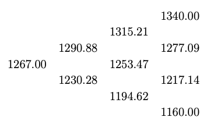
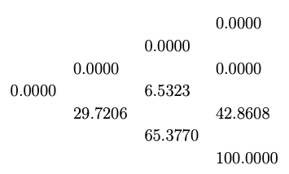
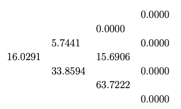
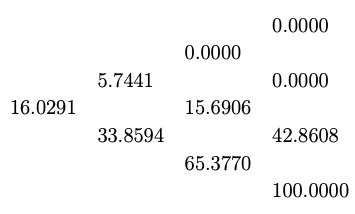
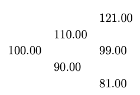

Discrete Time Models
In Chapter: «Portfolio and Arbitrage» , we derived pricing models for forwards and futures under the assumption that the market does not allow arbitrage opportunity. We now turn our focus to options pricing models, where our aim is to derive models that give the fair price of an option at the present time. Our models rely on certain criteria, namely the fair price criterion, the efficient market hypothesis, and the assumption that the market is arbitrage-free. Since option premiums depend crucially on the dynamics of the underlying asset, it is essential to understand stock price models before getting into option valuation.
Stock and option pricing models can be classified into two levels based on the time parameter, namely, discrete-time models and continuous-time models. Discrete-time models assume that time evolves in discrete steps (e.g., daily, weekly, or fixed time intervals). They are used to approximate the continuous behavior of stock prices and serve as a foundation for continuous time models.
In this chapter, we discuss discrete-time models for pricing underlying assets, with a particular focus on stocks, and options. Our primary aim is to understand the binomial pricing model and establish a theoretical framework essential for the analysis of financial models.
In Section «Click Here», we introduce the binomial model in its simplest form, involving only the present time and one future time. We keep the discussions simple to understand the basic idea behind the derivation of the model and also to explain why the model provides a fair price for an asset. First, we establish a general mathematical framework for the one-step binomial model for stocks. Then, using a replicating portfolio argument, we derive the option pricing model, leading to a formula for the option premium at the present time. Using our usual arbitrage portfolio argument, we then prove that the obtained fair price holds in an arbitrage-free market. In Section «Click Here», we extend the binomial model to multiple steps, where the stock movement across time levels is assumed to be independent. Again, we prove a mathematical framework for the multi-step binomial model for stocks and then extend our discussion to derive precise pricing models for option premiums with minimum mathematical technicalities. Once the methodology of the binomial model is established, we further refine the concepts in Section «Click Here» by developing a rigorous mathematical framework based on the theory of martingales.
Single-Step Binomial Model
Let \(t=0\) denote the present time at which the risky asset is purchased, and let \(t=T\) represent the end time of the investment period. In the case of options, \(T\) corresponds to the expiration time. In a one-step model, we consider only two time steps, \(t_0=0\) and \(t_1=T.\)
In this section, we derive the single step binomial model for option pricing when the underlying asset is a stock. The same approach can be adapted to other risky assets such as currencies and commodities. We begin by specifying the binomial model for the evolution of the underlying stock price.
Underlying Model
Since market information in future time is unknown at present, the asset price at a future time remains unpredictable. Consequently, the price movement from its current market value to the next time step is modeled as either an upward or a downward move. In this sense, stock price evolution is analogous to the outcome of tossing a possibly biased coin. At each time step, the model specifies the probability of an upward movement and, consequently, the probability of a downward movement.
The one-step binomial model assumes that the current stock price \(S_0\) is known at the present time \(t_0\) and models the stock price at a future time \(t_1\) as taking only two possible discrete values, denoted by \(S_u\) and \(S_d,\) where \(S_d < S_u.\)
Let us give a general mathematical framework for the model.
Let \(S_0\) be the given stock price at the present time \(t_0\).
A pair of multiplicative factors, denoted by \(d\) and \(u\), affecting the future stock price are obtained such that \(0 < d < 1 < u\). The stock price \(S_{1}\) at some future time \(t=t_1\) is given by
- either \(S_{1} = S_0 u\) (upward movement)
- or \(S_{1} = S_0 d\) (downward movement).
Consider the probability space \((\Omega, \mathcal{F}_*, \mathbb{P})\), where
for some \(0< p<1\). Define \(S_1\) as the random variable given by
The one-step binomial model involves the parameters \(\{u, d, p\}\).
The multiplication factors \(u\) and \(d\) can be obtained in various ways. One approach is through technical observations of the historical price movement of the stock, as illustrated in Example «Click Here» . These parameters can also be determined using the logarithmic return model discussed in Section «Click Here». Similarly, the probability \(p\) can be obtained as an observed probability (see Example «Click Here» for an ad hoc method of estimating \(p\)) or from the risk-neutral probability derived in the following subsection.
Risk-neutral Probability
For a theoretical foundation, we use the risk-neutral probability measure in the binomial model, which we will discuss in this subsection.
The risk-neutral probability is derived under the assumption that the market does not allow any arbitrage opportunities, i.e., the market is viable. We now state an important no-arbitrage condition, whose proof is left as an exercise.
Let \(t=t_0\) be the present time and \(t_1>t_0\) be a future time. Let \(B\) be a risk-free instrument offering a per-period interest rate of \(\tilde{r}>0\) for the period \([0, T]\), and \(S\) be a stock following an one-step binomial model \(\{u, d, p\}\). Then a market consisting of \((B,S)\) is arbitrage-free if and only if
where

The above figure illustrates one-step binomial model, where a discretely compounded risk-free interest scheme is considered.
The risk-neutral probability for a pair of multiplicative factors can be obtained by adopting the fair game criterion.
The fair game criterion may be stated as
The expected present value of a future claim should be equal to the current value of the claim.
The following example motivates the fair game criterion, which leads to the risk-neutral price for the game.
Consider a game in which a player rolls a six-faced die once. If the outcome belongs to the event \(E_1=\{3,4,5,6\}\), the player wins ₹ \(S_u=100\). On the other hand, if the outcome is in \(E_2=\{1,2\}\), the player receives only ₹ \(S_d = 20\). The gambling house charges an entry fee of ₹ \(S_0\) to play the game. The question is: What is the fair value of \(S_0\)?
Assume that the player has to pay the entry fee today and play the game after one year (\(T=1\)). Let \(S_T\) denote the payout at time \(T\). Given an appropriate risk-free interest scheme, one may take \(S_0\) as the present discounted value of \(S_T\). However, since \(S_T\) is unknown at the present time \(t_0\), we need a fair estimate of \(S_0\) that accounts for all possible values of \(S_T\).
To this end, we apply the binomial model with the multiplicative factors as
Further, it is necessary to decide upon the probability of winning the game. In this context, the probability of winning is clearly \(\mathbb{P}(E_1) = 2/3\). Thus, the expected value of the bet is \(\mathbb{E}(S_T) \approx 73.33.\)
By taking the present discounted value of \(\mathbb{E}(S_T) \) as the fair entry fee, we obtain \(S_0\), in accordance with the fair game criterion stated in Remark «Click Here» and is given by
This price is referred to as the risk-neutral price for the game, given the specific risk-free instrument.
In particular, if we consider a continuous compounding scheme with an annual rate of \(\tilde{r}=0.07\), then \(S_0 \approx 68.37\).
In the above example, the probability of success is explicitly determined by the rules of the game. However, this is not always the case. For instance, consider a scenario where a trader must decide whether to buy or sell a stock with given up and down prices \(S_u\) and \(S_d\) (similar to the setting in Example «Click Here» ), respectively. Then the probability of success is not apparent. Nevertheless, we know the current price \(S_0\) of the stock from the market. This leads to the following inverse question:
Given \(S_0\) (not necessarily the risk-neutral price), what is the implied probability that is consistent with \(S_0\) under a risk-free scheme with a given prevailing interest rate?
The following example illustrates the concept of implied probability in this context.
Let the prevailing annual interest rate be 6% with continuously compounded interest scheme and the stock at time \(t_0=0\) be \(S_0=\)₹ 750. Assume that the stock price in one year will be one of the two values ₹1260 or ₹ 675. Then the aim is to find the probability that it takes the value 1260.
The present values of the two possible values are given by
Using the fair game criterion, we have
This gives \(p\approx 0.2075.\)
The probability obtained in the above example is called the risk-neutral probability. Let us now derive the general formula for the risk-neutral probability.
Let the per-period interest rate be \(\tilde{r}\) and let \(u\) and \(d\) be such that \(0
By imposing the fair game criterion (Remark «Click Here» ), we obtain an expression for \(p\), which we denote by \(p^*\) given by
Using the no-arbitrage condition in Lemma «Click Here» , we see that \(p^*\in (0,1)\) and hence we can regard this as probability of the stock moving upward and is called the risk-neutral probability.
- If Mrs. Sahana is confident about her prediction that the share price will touch \(S_u\) with her observed probability 0.7, then find the risk-neutral price of the stock on the 2\(^{\rm nd}\) of January 2023. Answer: \(\approx\) 3270.37
- If the traded price of the stock on the 2\(^{\rm nd}\) of January 2023 is ₹ 3285 per share, then find the risk-neutral probability that the stock will touch \(S_u\) on the 2\(^{\rm nd}\) of January 2024. Answer: \(\approx\) 0.73303
European Option Pricing Model
The aim of options theory is to develop models that determine a fair price for a given option. In this section, we derive the one-step binomial pricing model based on the corresponding stock model formulated in the previous subsection.
We develop the one-step binomial pricing model for European options. The time partition of the option period \([0, T]\) is taken as \(\mathbb{T}_1 = \{t_0=0, t_1=T\}\), where the underlying stock price at time \(t_0\) is \(S_0\), and at expiration time \(T\), it is \(S_T\).
To motivate the derivation, we build the intuitive framework from the writer's perspective.
The key question is:
How much should the writer have in hand at time \(t_0\) to fulfill the obligation of settling the option contract at expiration \(T\)?
This leads to the fundamental problem of hedging the option position.
The writer's obligation at time \(T\) is the payoff \(H_T\) of the option, where
Since the premium must be determined at time \(t_0\), \(S_T\) is unknown and must be treated as a random variable. In the one-step binomial model, \(S_T\) is assumed to take two possible values, scaled by the multiplication factors \(u\) and \(d\), which satisfy the no-arbitrage condition Lemma «Click Here» for a given risk-free instrument with a given prevailing interest rate.
Let us define
Recall from Remark «Click Here» that a spot portfolio consists of two vector components representing the spot market positions in risk-free and risky assets. We consider a spot portfolio with single position in each asset, denoted by \(\Pi = (\phi, \theta)\), where \(\phi\) denotes the number of units held in the risk-free asset, and \(\theta\) denotes the number of units held in the risky asset. Recall, a negative value of a component indicates a short position in the asset, whereas a positive value indicates a long position.
To meet the payoff obligation, the writer must construct a spot portfolio \(\Pi_1 = (\phi_1, \theta_1)\) at time \(t_0=0\) such that the value of the portfolio at \(t_1=T\) equals the payoff \(H_1 (=H_T)\). In other words, the writer must set up the spot portfolio \(\Pi_1\) such that
Such a portfolio is called the replicating portfolio or the hedge portfolio for the option \(H\). It completely eliminates the writer's risk in selling the option, irrespective of whether the stock takes the upward or downward value at time \(t_1=T\) considered in the one-step binomial model.
Although the hedge portfolio meets the payoff obligation, the writer has to spend an initial cost to set up the portfolio at time \(t_0\). Naturally, the writer would charge at least the initial cost of this portfolio as the option premium. Observe that any amount more than this initial value would be a risk-less profit for the seller. Consequently, a rational buyer would be willing to pay, at most, the initial value of the hedge portfolio.
Let us now derive the formula for the option premium in the one-step binomial model, building on the intuitive ideas discussed above.
Step 1: [ Constructing a replicating portfolio]
The portfolio \(\Pi_1 = (\phi_1,\theta_1)\) needs to be constructed at \(t_0\). Assume that the corresponding prices are \((B_0,S_0)\) and the per-period prevailing interest rate is \(\tilde{r}\).
Since there are two possibilities for \(S_1\) at the time level \(t_0\), the replicating condition (5.4) leads to the linear system
where \(I(\tilde{r})\) is given by Lemma «Click Here» and \(H_{T}\) values are given by (5.3). We can obtain \(\Pi_1\) by solving the linear system (5.5). Since \(u>d\), the system (5.5) has a unique solution. Hence, for a given \(\tilde{r}>0\), every option with the underlying asset following the one-step binomial model possesses a unique replicating portfolio at any time \(t < T\).
Solving the system (5.5) yields
For a given set of parameters \(\{\tilde{r}, u, d, B_0, S_0\}\), the portfolio \(\Pi_1\) constructed using the formulae (5.6) at the present time \(t_0\) is the {replicating portfolio} or the hedge portfolio for the option position to be hedged.
Step 2: [ Matching the initial investment]
The initial investment is given by
Using (5.6), we get
where
is the risk-neutral probability. By the definition of expectation, we have
where \(H_{T}^* = \frac{H_T}{I(\tilde{r})}\) is the discounted payoff of the option.
In the following theorem, we prove that the option price derived using the replicating portfolio argument also holds in an arbitrage-free market.
Consider a set of parameters \(\{\tilde{r}, u, d, B_0, S_0\}\). For a given option, if \(\Pi_1\) is a replicating portfolio in a no-arbitrage market for a given European option, then the price \(H_0\) of the option at the present time \(t_0=0\) is given by
Suppose that \(H_0>\phi_1 B_0 + \theta_1 S_0\) (why are we assuming this?).
In this case, we construct a portfolio \(\Pi_1\) at \(t=0\) with the following trades:
At time \(t=T\), the value of the portfolio \(\Pi_1\) is
Using replicating strategy, we see that
irrespective to whether the stock goes up or down. Thus, \(\Pi_1\) is an arbitrage portfolio.
Similarly, we can construct an arbitrage portfolio for the case when \(H_0<\phi_1 B_0 + \theta_1 S_0.\)
Multi-step Binomial Model
We now extend the binomial model to multiple steps (also called binomial lattice model or binomial tree model). As in the one-step case, we first establish the mathematical framework for the underlying stock and then derive the model for option premiums in arbitrage-free markets.
Stock Price Model
One can understand the multi-step binomial model by drawing an analogy to repeatedly tossing multiple coins or tossing a single coin multiple times.
Starting from \(t_0=0\), one can apply the one-step binomial model sequentially to progress to any time \(t_{n}\), where \(n=1,2,\ldots\). This process forms the multi-step binomial model, more precisely referred to as the \(n\)-step binomial model.
Assume that a stock is purchased at the present time \(t_0=0\) for an amount of \(S_0\) per share. Also, assume that the stockholder has to sell the stock at some future time \(t_n=T>0\).
To construct an \(n\)-step binomial model, first consider the uniform partition
of the holding period \([0,T]\). Discrete time models assume that the transactions occur only at times \(t\in \mathbb{T}_n\) and hence are developed to work on a given time partition instead of the whole interval \([0,T]\).
The stock price at each time \(t=t_k\), for \(k=0,1,\ldots,n\), is denoted by \(S(t_k)\) or \(S_k\) (for notational convenience). In the \(n\)-step binomial model, the stock price process \(\{S_k~|~k=1,2,\ldots, n\}\) is formulated as follows:
Given \(S_{k-1}\) at time \(t=t_{k-1}\), for \(k=1,\ldots, n\), the binomial model assumes only two possibilities for \(S_{k}\), namely,
- \(S_{k} = S_{k-1} u_k\), for some upward factor \(u_{k}>1\), which is referred to as an upward movement; and
- \(S_{k} = S_{k-1} d_k\), for some downward factor \(d_{k}<1\), which is referred to as downward movement.
where \(\Omega_k = \{u_k, d_k\}\), for each \(k=1,2,\ldots, n\). Elements of \(\Omega\) are denoted by the \(n\)-tuple \(\boldsymbol{\omega}=(\omega_1,\omega_2,\ldots, \omega_{n})\), where each \(\omega_k\) takes a value of either \(u_k\) or \(d_k\) with \(0 < d_k < 1 < u_k,\) for \(k=1,\ldots,n\).
For any given \(k\in \{1,2,\ldots,n\}\) we use the notation
With these notations, we can write \(\Omega = \Omega_k'\times\Omega_k''\), for each \(k=1,2,\ldots,n\), and therefore any \(\boldsymbol{\omega}\in \Omega\) can be written as \(\boldsymbol{\omega} = (\boldsymbol{\omega}_k',\boldsymbol{\omega}_k'')\) with \(\boldsymbol{\omega}_k'\in \Omega_k'\) and \(\boldsymbol{\omega}_k''\in \Omega_k''\).
For any given \(\boldsymbol{\omega}_k'\in \Omega_k'\), define
We can see that, for any given \(k\in \{1,2,\ldots,n\}\),
forms a partition of \(\Omega\). Also, we can see that \(\texttt{P}_{k+1}\) is finer than \(\texttt{P}_k\), for \(k=1,2,\ldots,n-1\).
We use the convention that \(\texttt{P}_0 = \{\Omega\}\).
For theoretical reasons, we need to assume that the outcome at any time step \(t=t_k\) is independent of the outcomes at all the previous time steps. Although this assumption is intuitive in the case of repeated coin tosses, its validity in stock price processes is less obvious.
In financial markets, the well-known efficient market hypothesis may be used as a motivation for modeling successive price changes as independent in simple discrete-time models.
The efficient market hypothesis may be stated as follows:
The current price of a risky asset fully reflects all available information, and changes only in response to new information.
In the derivation of the model, we assume that the successive returns (or equivalently the up/down movements of the stock price) are independent and identically distributed. Consequently, the probability space \((\Omega, \mathcal{F}_*, \mathbb{P})\) is given by the product space
for \(\boldsymbol{\omega}=(\omega_1,\omega_2,\ldots, \omega_{n})\in \Omega\).
An \(n\)-step binomial model defines the stock price \(S_n\) at \(t=T\) as a random variable given by
where each \(\omega_k\in \{u_k, d_k\}\) with \(0 < d_k < 1 < u_k,\) for \(k=1,\ldots,n\).
The parameters involved in an \(n\)-step binomial model are given by the set \(\{\boldsymbol{u}, \boldsymbol{d}, \boldsymbol{p}\}\) where \(\boldsymbol{u}=(u_1, u_2,\ldots, u_{n}),\) \(\boldsymbol{d}=(d_1, d_2,\ldots, d_{n}),\) and \(\boldsymbol{p}=(p_1, p_2,\ldots, p_{n}),\) are \(n\)-dimensional vectors representing the upward factors, downward factors, and associated probabilities.
It is customary to assume
Then for each \(\boldsymbol{\omega}\in \Omega\), there exists an integer \(j\) with \(0\le j\le n\) such that
Furthermore, assuming an equal probability \(p\) of obtaining \(u\) at every time step, we get
The above discussion shows that in the binomial model, with a specific choice of parameters \(u_k=u\), \(d_k=d\), and \(p_k=p\) for \(k=1,2,\ldots, n\), the number of up moves follows a binomial distribution. In this case, we denote the set of parameters of the \(n\)-step binomial model for the underlying asset as \(\{u, d, p\}\) with \(n\ge 1\).
Each element \(\boldsymbol{\omega}\in \Omega\) can be interpreted as a path in the binomial lattice, referred to as a sample price path, leading to a terminal stock price \(S_n(\boldsymbol{\omega})\). The lattice (or tree) diagram of a \(4\)-step binomial model is illustrated in Figure «Click Here» in a specific case where \(d=1/u\).
Similarly, the probability of an upward movement \(p\) can be chosen in various ways. In Section «Click Here», we obtained the risk-neutral probability in one-step binomial model using the fair game criterion stated in Remark «Click Here» . This concept can also be extended to the \(n\)-step binomial model.
where \(I\) is given in Lemma «Click Here» with \(\tilde{r}\) being the per-period interest rate for the period \([0, T]\), \(u\) is the identical upward factor, and \(d\) is the identical downward factor in the \(n\)-step binomial model with \(n\ge 1\).

determine the following:
- Find the stock price if the sample price path involves 7 upward movements.
- Find \(\mathbb{P}(\{S_{30}\le S_0 u^7d^{23}\})\).
- Find \(\mathbb{P}^*(\{S_{30}\le S_0 u^7d^{23}\})\), where \(\mathbb{P}^*\) denotes the risk-neutral probability measure with the probability of upward movement being \(p^*\) given in Remark «Click Here» with \(\tilde{r}=0.03\) continuously compounded.
European Option Pricing Model
In this subsection, we extend the binomial option pricing model discussed in Section «Click Here» to the multi-step case. The idea is to divide the entire binomial lattice into single-step subtrees and apply the single-step binomial model recursively. Starting from the terminal point \(t=t_n\), we move backward through the lattice by applying the single-step model at each subtree. We illustrate this idea using the two-step binomial case.
Consider the partition \(\mathbb{T}_2 = \{t_0=0,t_1=T/2,t_2=T\}\). In this case, the sample set is given by
and the partitions of \(\Omega\) at \(t=t_1\) and \(t=t_2\) are given by, respectively,
Let \(\mathcal{F}_1 = \sigma(\texttt{P}_1)\), the generated \(\sigma\)-field of \(\texttt{P}_1.\)
We use the following notations for the payoff \(H_T\) (since \(n=2\), we can also use the notation \(H_2\) instead of \(H_T\)):
The possible payoffs \(H_{2}^{\cdot\cdot}\) are defined in a similar way to how they are defined in the 1-step binomial model in (5.3).
Applying 1-step binomial model to the sub-partition \(\{t_1, t_2\}\), the fair value of the option at \(t=t_1\) can be obtained as
with \(\tilde{r}_2\) being the per-period interest rate for the period \([t_1,t_2]\). Observe that \(H_1\) is a random variable, and it can be written in terms of the conditional expectation as
where \(H_2^*\) is the discounted payoff \(H_2\) at time \(t_2\).
We now consider \(H_1\) as the payoff of the option at time level \(t=t_1\) and apply the one-step binomial model once again (now at \(t=t_0\)) to obtain \(H_0\). At this stage, the formula for \(H_0\) is given by
where \(\tilde{r}_1\) is the per-period prevailing interest rate for the period \([t_0, t_1]\) and \(\mathbb{E}^*\) at this time level is defined with respect to the risk-neutral probability \(p^*_1\) restricted to the subtree in the partition \(\{t_0,t_1\}.\) We finally take \(H_0\) given above as the fair price of the option at time \(t_0=0\).
As in the case of the 1-step method, we can prove that \(H_0\) given by Example «Click Here» is the unique no-arbitrage price for a European option.
Generalization to Multi-step Method
Let us now discuss the detailed construction of the multi-step model using the backward induction method illustrated in Example «Click Here» . Note that, in this example, we constructed the two-step model directly by combining two one-step models. Hence, we directly used the price formula given in Theorem «Click Here» , avoiding the explicit construction of the delta hedge portfolio using the replicating argument. The same algorithm can be generalized to an \(n\)-step method. However, for a complete and systematic exposition of the method, we now present the full methodology as we did in one-step model.
We consider a European option with payoff \(H_T\).
Consider the uniform partition \(\mathbb{T}_n = \{t_0=0,t_1,t_2,\ldots, t_{n-1},t_n=T\}\) of the option period \([0,T]\), where the upward and downward factors are taken to be constant throughout option period and are denoted by \(u\) and \(d\), respectively. For convenience, we denote the payoff \(H_T\) by \(H_n\).
Let \(\texttt{P}_k\), for \(k=1,2,\ldots, n\), denote the partition of \(\Omega\) given by (5.8). Let \(\mathcal{F}_k\) denote the generated \(\sigma\)-field of \(\texttt{P}_k\), i.e., \(\mathcal{F}_k=\sigma(\texttt{P}_k).\)
Given the \(\mathcal{F}_{n-1}\)-measurable random variable \(S_{n-1}\), define
where \(u\) and \(d\) are chosen to satisfy the no-arbitrage condition (?) for a given per-period interest rate \(\tilde{r}\) for the period \([t_{n-1}, t_n]\). Then the payoff is given by
where \(H_{n}^u\) and \(H_{n}^d\) are defined by
The method consists of three steps:
- Constructing a replicating strategy: Construct the replicating portfolio, which is the final part of the self-financing strategy \(\{\Pi_k~|~k=1,2,\ldots, n\}\) (recall Definition «Click Here» ) in such a way that
\begin{eqnarray} V_n= H_T, \end{eqnarray}(5.17)
where \(V_n=V_n(\Pi_n)\). Note that this is analogous to the hedge condition (5.4) in one-step method;
- Self-financing condition: Obtain the amount spent in setting up the replicating portfolio at \(t=t_{n-1}\) using the self-financing condition; and
- Backward induction: Perform a backward induction process by repeating Step 2 until the initial time \(t_0\) and obtain the value of the portfolio \(\Pi_1\) which should be taken as the option premium.
Let us now provide the detailed working of the above two steps.
Step 1: [ Constructing a replicating strategy]:\\ Since
the condition (5.17) can be written as
Under the no-arbitrage assumption in Lemma «Click Here» , we can obtain a unique solution of the above linear system and is given by
Note that \(\Pi_n=(\phi_n,\theta_n)\) is the final term in the self-financing strategy \(\{\Pi_k~|~k=1,2,\ldots,n\}\) that makes the entire strategy a replicating strategy. Hence, it is called a replicating portfolio.
is a stochastic process. Sometimes, this process itself is called a portfolio.
Step 2: [ Self-financing condition]
The total amount needed to make the portfolio \(\Pi_n\) is
Substituting (5.19) in the above expression, we get
where \(p^*\) is the risk-neutral probability given by (5.7).
Since we assume that the strategy is self-financing, by the self-financing condition in Definition «Click Here» , we have
The payoff \(H_n\) can be taken as a random variable defined on the probability space \((\Omega,\mathcal{F}^*,\mathbb{P}^*)\), where the probability measure \(\mathbb{P}^*\) is defined as
The expression \((H_{n}^{u}p^* + H_{n}^{d} (1-p^*))\) on the right hand side of (5.20) is the expectation of \(H_n\) under the probability measure \(\mathbb{P}^*\). Note that both \(H_{n}^{u}\) and \(H_{n}^{d}\) depends on \(S_{n-1}\). Since the stock price process \(\{S_k~|~k=1,2,\ldots,n\}\) is defined on the filtered probability space \((\Omega,\mathcal{F},\mathbb{P}^*,\{\mathcal{F}_k\}),\) we see that \(S_{n-1}\) is a \(\mathcal{F}_{n-1}\)-measurable random variable. Hence, both \(H_{n}^{u}\) and \(H_{n}^{d}\) are \(\mathcal{F}_{n-1}\)-measurable random variables. This shows that the expectation \((H_{n}^{u}p^* + H_{n}^{d} (1-p^*))\) is a \(\mathcal{F}_{n-1}\)-measurable random variable. Further, it can be shown that this is precisely the conditional expectation of \(H_n\) given \(\mathcal{F}_{n-1}\) (\(\subseteq \mathcal{F}^*\)). In notation, we write it as \(\mathbb{E}(H_n~|~\mathcal{F}_{n-1})\). Since, we have been denoting the expectation with respect to the risk-neutral probability as \(\mathbb{E}^*(\cdot)\), and the discounted payoff as \(H_{n}^*\), we use the notation
Using the conditional expectation notation, we can write
Let \(H_{k}\) denotes the value of the option at time \(t=t_{k}\), for \(k=1,2,\ldots, n\), then by following the idea of the proof of Theorem «Click Here» , we can prove the following theorem.
where \(V_k = V_k(\Pi_k)\) is the value of the portfolio \(\Pi_k\) from the replicating strategy at time \(t_k\).
By the above theorem, we can write
Step 3: [ Backward Induction] For every \(k=n, n-2, \ldots, 1\), assume that we have \(H_k\) which is \(\mathcal{F}_{k}\)-measurable and \(\mathcal{F}_{k-1}\subset\mathcal{F}_{k}\).
- Using \(H_k\) construct the replicating portfolio \(\Pi_{k}\) at time level \(t=t_{k-1}\).
- Impose the self-financing condition and obtain \(V_{k-1}\).
- Take
\[ H_{k-1}=\mathbb{E}^*(H_{k}^*~|~\mathcal{F}_{k-1}). \]
Note that the conditioning on \(\mathcal{F}_0\) is not required because, it is a trivial \(\sigma\)-field.
The stock price \(S_k\) at every time level \(t=t_k\), \(k=1,2,\ldots,n\), takes one of the values
Correspondingly, we use the notation \( H_{k,j}:=H_k(S_{k,j})\) for the value of the option at each time level \(t=t_k\).
Note that we do not need to construct the replicating strategy to obtain the fair price for an option. This was illustrated in Example «Click Here» in two-step binomial model. The following problem gives the explicit expression for a three-step binomial model:
Continuing in this way, we get the \(n\)-step binomial model, which we state in the form of a theorem.
Let the option period \([0,T]\) be partitioned into \(n\) subinterval. The price of an attainable European option in a no-arbitrage market is uniquely given by
In the following problem, we illustrate a particular case of trinomial model.
Consider the financial market \((B,S^{(1)},S^{(2)})\), where \(\{B_k\}\), \(\{S^{(1)}_k\}\), and \(\{S^{(2)}\}\) are the corresponding prices process at time levels \(\mathbb{T}_n=\{t_0,t_1,\ldots,t_n\}\) with \(B_0\ne 0\), \(S^{(j)}_0\ne 0\), \(j=1,2\). Let the sample space be \((\Omega,\mathcal{F}^*)\), where
with \(U\) being the upward movement of a risky asset, \(M\) being the sideway movement, and \(D\) being the downward movement. As usual, \(\mathcal{F}^*\) is the power set of \(\Omega\) and the discrete probability be given by
for some \(p,q\in (0,1)\) with \(0<1-p-q<1\).
Let \(d_j\), \(m_j\), \(u_j\), \(j=1,2\), and \(r\ge 0\) be such that \(0
and \(r\) is the per period interest rate.
- Show that there exists a unique replicating strategy if and only if
\[ \left|\begin{array}{ccc} 1&u_1& u_2\\ 1&m_1& m_2\\ 1&d_1& d_2 \end{array}\right|\ne 0. \]
- Show that the system
\begin{eqnarray} (u_1-d_1)p^* + (m_1-d_1)q^* = 1+r - d_1\\ (u_2-d_2)p^* + (m_2-d_2)q^* = 1+r - d_2 \end{eqnarray}(5.23)
has a unique solution if and only if a unique replicating strategy exists.
Logarithmic Return Model
The binomial model is derived under the assumption that the stock price \(S_t\) at the next time step \(t\) is a discrete random variable with its range consisting of two points: one corresponds to an upward movement of the stock with upward factor \(u\), and the other corresponding to a downward movement with the factor \(d\). Different approaches can be adapted to determine feasible values for \(u\) and \(d\). One important approach is the log-return model which is also used as an approximation to the lognormal model (introduced in the next chapter). In this subsection, we derive the expressions for \(u\) and \(d\) using the log-return model.
Let \(S_0\) denote the current price of a stock. Motivated from how the value of money grows with time in a continuous compounding scheme, let us consider the price at any time \(t>0\) in the form
where \(R_t\) is a random variable. Observe that \(R_t = rt\) with a fixed interest rate \(r\) leads to the continuously compounding risk-free investment. Replacing the deterministic form by a suitable random variable, the model can be used to acknowledge that the stock price at a later time is subject to uncertainty due to random market movements.
Let the holding time period of the stock be \([0,T]\). Consider the uniform partition with \(n\) equal parts
We propose the model for the stock price at time \(t=t_{k}\), \(k=1,2,\ldots, n\) as
where \(R_{k} (=R_{t_k})\) is a random variable.
The stock price at \(t_n=T\) can be written as
Using (5.25) in the above expression, we get
Taking logarithm on both sides, we get
The efficient market hypothesis (EMH) suggests that successive price changes are independent, implying that we can assume \(R_k\)'s are mutually independent. Additionally, we assume that \(R_k\)'s are identically distributed. By combining these assumptions, we treat \(\{R_k~|~k=1,\ldots, n\}\) as a collection of independent and identically distributed (iid) random variables. Further, we assume that \(R_k\)'s have a finite mean \(\tilde{\mu}\) and variance \(\tilde{\sigma}^2\). In this context, the process \(\left\{\ln\left(\frac{S_k}{S_0}\right)~|~ k=0,1,2,\ldots, n\right\}\) is called a random walk.
Let \(\mu\) and \(\sigma^2\) denote the annualized mean and variance of the log-return of the stock. That is,
On the other hand, taking expectation and variance in (5.27), and noting that \(R_k\)'s are iid, we have
Application to Binomial Model
Binomial model can also be applied to study the log-return of a stock. In this case, we have a theoretical methodology to obtain the parameters \(\{u,d,p\}\) of the binomial model.
In binomial framework, the matching relations (5.29) for the period \([0, \Delta t]\) takes the form
where \(\mu\) and \(\sigma^2\) are assumed to be known.
We have a system of two nonlinear equations, but we have three unknowns \(u\), \(d\), and \(p\). Therefore, we need one more equation to get a closed system or fix one parameter value and solve the system for the other two. We can choose one of the three parameters in at least two different ways:
- Logarithmic return binomial model with symmetric lattice: We may simply choose \(d=1/u.\)
Using this symmetric lattice condition, the equations (5.30) reduce to
\begin{eqnarray} (2p-1) \ln u &=& \mu \Delta t,\\ 4p(1-p)(\ln u)^2 &=& \sigma^2 \Delta t. \end{eqnarray}(5.31)
Squaring the first equation and adding it to the second equation, we get
\begin{eqnarray} \ln u = \sqrt{(\mu \Delta t)^2 + \sigma^2 \Delta t} \end{eqnarray}(5.32)Substituting (5.32) in the first equation, we get
\begin{eqnarray} p = \frac{1}{2} + \frac{1/2}{\sqrt{\sigma^2/(\mu^2 \Delta t) +1 }}. \end{eqnarray}(5.33)Thus, we have
\begin{eqnarray} \left.\begin{array}{c} u = \exp\left(\sqrt{(\mu \Delta t)^2 + \sigma^2 \Delta t}\right),\\ d = \exp\left(-\sqrt{(\mu \Delta t)^2 + \sigma^2 \Delta t}\right),\\ p = \frac{1}{2} + \frac{1/2}{\sqrt{\sigma^2/(\mu^2 \Delta t) +1 }}. \end{array}\right\} \end{eqnarray}(5.34)Assuming that \(\Delta t\) is very small we can adopt an approximation to the above three expressions, where the higher order term of \(\Delta t\) is neglected and the smallest order term of each expression is retained. This approximation gives the simplified set of parameters
\begin{eqnarray} \left.\begin{array}{c} p \approx \dfrac{1}{2} + \dfrac{1}{2}\left(\dfrac{\mu}{\sigma}\right)\sqrt{\Delta t},\\ u \approx e^{\sigma\sqrt{\Delta t}},\\ d \approx e^{-\sigma\sqrt{\Delta t}}. \end{array}\right\} \end{eqnarray}(5.35)For a given set of parameters \(\mu\) and \(\sigma\), one can use the logarithmic return binomial model with symmetric lattice to simulate a stock price dynamics for a sufficiently small time. Generally, \(\mu\) and \(\sigma\) are estimated empirically from historical data, often using statistical methods such as moving averages or maximum likelihood estimation.
Note:Note that we can use the formulae (5.35) only when \(\Delta t\) is very small. For instance, we may use these approximate formulae when \(\Delta t = 1/365\) (one-day stock analysis) or \(\Delta t = 1/52\) (one-week stock analysis, where it is customary to consider 52 weeks per year). - Risk-neutral probability:
Another approach to fix a value for \(p\) and solve for \(u\) and \(d\). For instance, \(p\) can be taken as the risk-neutral probability obtained using one-step binomial model applied to the logarithmic return of a stock.
The fair game criterion applied to log-return of a stock gives
\[ \mathbb{E}^*\left( \ln\left(\frac{S(\Delta t)}{S_0}\right) \right) = 0, \]which, in the case of one-step binomial model, leads to the risk-neutral probability of the upward movement as
\[ p^* = \frac{-\ln d}{\ln u - \ln d}. \]
for some \(0 < d < 1 < u\), where \(S_0\) is the stock price at time \(t=0\) and \(S(\Delta t)\) is the stock price at time \(t=\Delta t\).

First, let us find \(u\), \(d\), and \(p\). We are given \(\mu = 0.15\), \(\sigma = 0.3\), \(T=1/12\) and \(\Delta t = 1/52\) (assuming there are 52 weeks per year).
Using the formulae given in (5.35), we get
The lattice diagram with \(n=4\) is depicted in Figure «Click Here» .
We refer to the procedure discussed above as matching procedure. The matching procedure gives different expressions for \(u\), \(d\), and \(p\) depending on how we choose the third condition. For instance, in the above discussion, we chose \(d=1/u\). However, one can have other choices as exemplified by the following two problems.
Answer: \(u = \exp\left(\mu \Delta t + \sigma \sqrt{\Delta t}\right)\)
Answer: \(u\approx 1.0168,\) \(d \approx 0.9729.\)
Hedge Strategy
The binomial pricing model in Theorem «Click Here» is derived by a backward induction procedure. At every time level \(t_{k-1}\), \(k=n,n-1,\ldots, 2,1\), we obtain the replicating portfolio \(\Pi_{k}\), which means its value \(V_{k}\) at time \(t_k\) equals the option value \(H_{k}\). Thus, the backward induction procedure determines a trading strategy \(\{\Pi_k\}_{k=1}^{n}\) with \(\Pi_k = (\phi_k, \theta_k)\) in the market \((B,S)\) such that \(V_k = H_k\). Further, since the strategy is self-financing, the portfolio value evolves exactly like the option price.
The backward procedure is a computational device used to determine the option values and the corresponding hedge ratios at every node of the binomial tree. Once these quantities are determined, the trading strategy can be implemented forward in time. Let us illustrate this procedure with a symmetric \(n\)-step binomial model.
Consider a time partition \(0=t_0 < t_1 < t_2 < \ldots < t_n=T\) and a binomial model with parameters \(u\) and \(d\). Let the initial price be \((1, S_0)\). The stock price at the node \((k,i)\) is defined as
Observe that \(k\) represents the time index and \(j\) denotes the number of increasing (upward) movements in the stock price up to the \(k^{\rm th}\) time level.
Let \(H_{k,j}\) denote the option value at \(t_k\) while the stock path involves \(j\) number of upward movements, and is computed using the backward iterative formula
for \(j=0, 1,\ldots, k.\) Here, \(p^*\) denotes the risk-neutral probability.
Consequently, the hedge portfolio formed at time level \(t_{k},\) \(k=0,1,\ldots,n-1\), is given by \( \Pi_{k+1,j} = (\phi_{k+1,j}, \theta_{k+1,j}), \) where
At the initial time \(t_0\), the trader sets up the portfolio \(\Pi_1\). At time \(t_1\), the realized stock price reveals which node of the tree has been reached, and the portfolio is rebalanced to the corresponding hedge \(\Pi_2\). This process continues until the time \(t_{n-1}\) where the replicating portfolio \(\Pi_k\) is set whose value at the terminal time \(t_n=T\) coincides with the option payoff \(H_T\). The strategy (portfolio process) thus constructed is called the hedging strategy. Since the \(\theta\) component is an approximation of \(\Delta = \frac{\partial H}{\partial S}\) (a Greek defined in a later chapter), we often refer this strategy as delta hedging.
Pricing for American Options
In this subsection, we examine the pricing of an American option. Let us consider a financial market \((B,S)\) at discrete time levels \(\mathbb{T}_n = \{t_0=0,t_1,t_2,\ldots,t_n=T\}\). As we did in the case of European options, we consider a filtration space \((\Omega,\mathcal{F}^*, \mathbb{P},\{\mathcal F_k\}_{k=0}^n)\) in which the price processes are adapted and the strategies are predictable.
Unlike European options, which can be exercised only at maturity, an American option may be exercised at any time before or at the expiration date. Therefore, the time of exercise must be modelled as a random time that depends only on the information available up to that time. Such a random variable is called a stopping time in probability theory and stochastic processes.
Let \((\Omega,\mathcal F,\mathbb P,\{\mathcal F_k\}_{k\in \mathbb{N}})\), with \(\mathcal{F}_\infty = \mathcal{F}\), be a filtered probability space. A random variable
is called a stopping time with respect to the filtration \(\{\mathcal F_k\}\) if
In the context of American options, the stopping time \(\tau:\Omega\to \mathbb T_n\) represents the time at which the option holder chooses to exercise the option.
Since an American option can be exercised at any time \(t_k\), \(k=0,1,\ldots, n,\) the holder of an American option has two possibilities at every time level \(t_k\), namely,
- the holder chooses to exercise the option, in which case, the holder obtains the payoff\[ H_k = \left\{\begin{array}{ll} \max(0, S_k - K),&\text{ for call option},\\ \max(0, K - S_k),&\text{ for put option}, \end{array}\right. \]
- the holder chooses to hold the option at least till the next time level \(t=t_{k+1}\).
where the conditional expectation is given by (?) with \(H^{a}_{k+1}\) being the payoff of the American option at time level \(t=t_{k+1}\).
where \(\tilde{r}\) is the per period interest rate.
Let us now see how to obtain \(H^{a}\).
Obviously, the holder will tend to choose the possibility that gives the maximum value to the option. Hence, to hedge the position, the writer should collect this maximum value as the price of the option. Therefore, we define the price of an American option at every time level \(t=t_k\) as
The holder may choose to exercise the option at a time \(t=t_k\) only if \(H^a_{k} = H_k\).
The optimal stopping time or optimal exercise time is given by the first time at which the immediate exercise value exceeds the continuation value. Thus we define the optimal exercise time as
This stopping time represents the earliest time along each sample path at which it becomes optimal to exercise the option.
The stock price process and the corresponding payoff process are shown in the following lattice diagrams (also called tree diagram).


The corresponding value process and the option price process are shown below:


The American put option price at \(t=0\) is obtained as \(H^{a}_{0}=16.03\). The optimal exercise time is given by
Exotic Options
So far, we have considered those options whose payoff depends only on the price of the underlying asset at the expiration time. That is, we had \(H_T = H_T(S_n)\). These options are path-independent options. There are also options whose payoff depends on the price of the underlying asset at one or more time levels in the time partition. That is, we also have options with payoff \(H_T = H_T(S_1,\ldots,S_n)\). Such options are called path-dependent options and they come under the exotic options type. There are many path-dependent options among which Asian options are popular.
An Asian option is a European contingent claim whose payoff depends on the average price of the underlying asset. We have two types of Asian options, namely,
- Fixed strike Asian options: These are the options with payoffs given by
\[ H_T = \left\{\begin{array}{ll} \max(0,A(S)-K),&\text{for call,}\\ \max(0,K-A(S)),&\text{for put,} \end{array}\right. \]
where \(A(S)\) is an average price of the underlying asset and \(K\) is the strike price.
- Floating strike Asian options: These are the options with payoffs given by
\[ H_T = \left\{\begin{array}{ll} \max(0,S_T-A(S)),&\text{for call,}\\ \max(0,A(S)-S_T),&\text{for put,} \end{array}\right. \]
where \(A(S)\) is an average price which is taken as the strike price of the option, and as usual, \(S_T\) denotes the price of the underlying asset at the expiration time.
- Discrete arithmetic average: \(A(S) = \frac{1}{n}\displaystyle{\sum_{k=1}^n} S_{k}\).
- Continuous arithmetic average: \(A(S) = \frac{1}{T}\int_{0}^{T} S(t)dt.\)
- Discrete geometric average: \(A(S) = \left(\prod_{k=1}^nS_k\right)^{1/n}\).
- Continuous geometric average: \(A(S) =\exp \left(\frac{1}{T}\int_{0}^T \ln S(t)dt\right).\)
The option can be exercised only at \(t=T\), the expiration date. This is a fixed strike Asian call option with discrete arithmetic average. We further take \(S_0=100\), \(K=90\), \(u=1.1\) and \(d=0.9\). If \(r=0.1\) for the option period, then we have \(p^* = 0.75\).
The stock price process is given in the following lattice diagrams:

The payoff at \(t=t_2\) is given by (note that our previous notation of \(H_{2,1}\) and so on will not work in this case).
The value process is computed using the backward induction technique as explained in the European options. At \(t=t_1\), the values are given by
We take \(V_1=H_1\) and proceed to find the value at \(t=t_0\). Then, we get
By Theorem «Click Here» , we get the initial price of the Asian option as